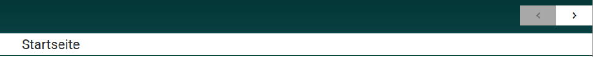
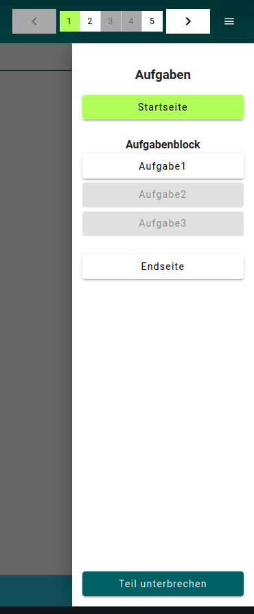

Konfiguration
Vor Beginn einer Studie sollten sich die Verantwortlichen Fragen bzgl. der Konfiguration einer Studie stellen. Nachfolgend sind einige Fragen aufgelistet, die in jedem Fall im Vorfeld gestellt werden sollten. Es kann an dieser Stelle nicht auf alle möglichen Fragen zur Konfiguration eingegangen werden. Die Konfigurationen werden mittels der beiden XML’s: XML zur Studien-Definition und XML zur Testheft-Definition vorgenommen. Nachfolgend werden die Fragen diesen beiden Dateien zugeordnet.
Detaillierte Informationen zu den beiden XML-Dateien: XML zur Studien-Definition und XML zur Testheft-Definition sind den Referenzen zu entnehmen.
Sind die Vorüberlegungen bzgl. der Studien-Konfiguration abgeschlossen und liegen die Testdateien für die Studie bereit, empfiehlt es sich die Konfigurationen zuvor hausinternen mit mehreren Teilnehmern zu testen (RUN-SIMULATION). So können ungünstige Konfigurationen schon im Vorfeld entdeckt werden.
XML zur Studien-Definition
Wie sollen die Zugänge aufgeteilt werde?
Die Zugangsdaten können Gruppen hinzugefügt werden. Alle gegebenen Antworten werden dann Gruppenabhängig gespeichert, sprich der Datensatz wird mit dem Namen der jeweiligen Gruppe im Testcenter abgespeichert. Im Vorfeld sollten sich die Studienverantwortlichen gut überlegen wie die Zugangsdaten gruppiert werden sollen, um eine schnelle und übersichtliche Auswertung am Studienende vornehmen zu können. Sollen an einer Studie bspw. mehrere Schulen oder Klassen teilnehmen, sollten für die Schulen und Klassen entsprechende Gruppen angelegt werden. Damit können die Antwortdaten schnell der jeweiligen Klasse bzw. Schule zugeordnet werden.
Sollen die Zugangsdaten für die Testpersonen zeitlichen Beschränkungen unterliegen?
Die angelegten Zugangsdaten in der XML zur Studien-Definition können zeitlichen Beschränkungen unterliegen. Folgende stehen zur Auswahl:
validFrom: Eine Anmeldung mit den Zugangsdaten kann erst ab einer bestimmten Zeit erfolgen. Die Eingabe erfolgt im Format: dd/mm/yyyy hh:mmvalidTo: Eine Anmeldung kann bis zu einer bestimmten Zeit erfolgen. Die Eingabe erfolgt im Format: dd/mm/yyyy hh:mmvalidFor: Eine Anmeldung kann in einem bestimmten Zeitfenster erfolgen. Format: Minuten Integer
Die zeitliche Beschränkung wird als Attribut einer Gruppe (group) von Zugängen zugewiesen. Nachfolgend ein Beispiel für ‘validTo’:
<?xml version="1.0" encoding="utf-8"?>
<Testtakers xmlns:xsi="http://www.w3.org/2001/XMLSchema-instance" xsi:noNamespaceSchemaLocation="https://raw.githubusercontent.com/iqb-berlin/testcenter/15.0.1/definitions/vo_Testtakers.xsd">
<Metadata>
<Description>
Beispielhafte XML zur Studien-Definition
</Description>
</Metadata>
<CustomTexts>
<CustomText key="app_title">Hier steht ein Custom Text</CustomText>
</CustomTexts>
<Group id="Gruppe 1" validTo="1/3/2024 19:30" label="An already expired group">
<Login mode="run-hot-restart" name="Testperson1" pw="vgf5z">
<Booklet>BOOKLET.SAMPLE-1</Booklet>
</Login>
<Login mode="run-hot-restart" name="Testperson2" pw="vgfjh">
<Booklet>BOOKLET.SAMPLE-1</Booklet>
</Login>
</Group>
</Testtakers>Die beiden Testpersonen 1 und 2 können sich nur bis zum 01.03.2024 19:30Uhr anmelden. Danach ist eine Anmeldung nicht mehr möglich.
Sollen Standardtexte ersetzt werden?
Texte werden mit Hilfe bestimmter Attribute und Daten in der XML geändert. Hierfür gibt es eine spezielle Liste mit möglichen Werten, die im Element: <CustomText> und dem Attribut: key hinzugefügt werden können. Link zur Liste. Werde Texte nicht individuell ersetzt, erhalten sie einen Standardtext. Welcher Text das ist, ist der Liste zu entnehmen.
Bestimmte Texte in der Anwendung und während des Studienlaufs können individuell angepasst werden. Im Vorfeld können Überlegungen stattfinden an welchen Stellen die Standardtexte durch individuelle Texte ersetzt werden sollen. Hierfür kann einer Liste entnommen werden, welche Standardtexte ersetzt werden können.
Die Testperson kann sich auf verschiedene Weise am Testcenter anmelden. In diesem Beispiel gibt die Testperson auf der Anmeldeseite des Testcenters den Zugangsnamen an und klickt auf Weiter. Im nächsten Schritt wird der in der XML zur Studien-Definition angelegte Code abgefragt. Hier wird nun der Text zur Code-Eingabe bsph. verändert. Im ersten Schritt war das Attribut: key im Element: <CustomText> nicht beschrieben. Dadurch wird ein Standardtext: “Bitte gib den Schülercode ein….” gesetzt:

Im zweiten Schritt wird in der XML zur Studien-Definition im Element: <CustomText> das Attribut: key mit einem gültigen Listenwert beschrieben.
<Testtakers>
<Metadata>
<Description>Beispielhafte XML zur Studien-Definition</Description>
</Metadata>
<CustomTexts>
<CustomText key="login_codeInputPrompt">Eingabe des Codes erforderlich.</CustomText>
</CustomTexts>
<Group></Group>
</Testtakers>Nachdem die veränderte XML in den Arbeitsbereich der Studie geladen wurde und die Testperson sich mit dem Namen: egx45t anmeldet, ist der veränderte Text zu sehen:

Soll ein Gruppenmonitor eingesetzt werden, um die Studie zentral steuern zu können?
Bei einer größeren Anzahl von Studienteilnehmer*innen kann es sinnvoll sein einen Gruppenmonitor einzusetzen. Dieser erlaubt der Testleitung die Testpersonen zu steuern und einzutakten. Der Gruppenmonitor wird mit Hilfe eines speziellen Zugangs mit dem Modus: monitor-group in der zu steuernden Gruppe angelegt.
Hier ein Beispiel:
<Testtakers>
<Metadata>
<Description>Beispielhafte XML zur Studien-Definition</Description>
</Metadata>
<CustomTexts></CustomTexts>
<Group id="sample_group" label="Primary Sample Group">
<Login mode="run-hot-return" name="Testperson1" pw="hg54f">
<Booklet>BOOKLET.SAMPLE-1</Booklet>
</Login>
<Login mode="monitor-group" name="test-group-monitor" pw="er45tz"/>
</Group>
</Testtakers>Mehr zum Gruppenmonitor ist dem gleichnamigen Kapitel zu entnehmen.
XML zur Testheft-Definition
Konfigurationen zum Testheft können im Element: <Config> mit Hilfe des Attributs: key vorgenommen werden. Die möglichen Werte und Daten, die angegeben werden können, sind einer spezielle Liste zu entnehmen. Außerhalb dieses Elementes können weitere Konfigurationen erfolgen.
Sollen Aufgaben- und Testheftbezeichner angezeigt werden?
Das in der XML zur Testheft-Definition festgelegte Label einer Aufgabe oder das Label des Testheftes, können während der Testung angezeigt werden. Dies wird in der Testheft-Konfiguration (Config) mit dem Wert: unit_screenheaderund einem entsprechenden Datum aus der zugehörigen Liste festgelegt. Im nachfolgenden Bild wird der Titel der Aufgabe, in der sich die Testperson gerade befindet, angezeigt.

Wie anhand der Navigationsleiste oben rechts gut zu sehen ist, befindet sich die Testperson in der dritten von 5 Aufgaben. In der XML zur Testheft-Definition trägt die 3. Aufgabe das Label: Aufgabe2. Dieses Label wird im Kopf der Aufgabe angezeigt, wenn der Wert unit_screenheader mit dem Datum WITH_UNIT_TITLE in der BookletConfig beschrieben wird.
<Booklet xmlns:xsi="http://www.w3.org/2001/XMLSchema-instance" xsi:noNamespaceSchemaLocation="https://raw.githubusercontent.com/iqb-berlin/testcenter/14.3.0/definitions/vo_Booklet.xsd">
<Metadata>
<Id>BOOKLET.SAMPLE-1</Id>
<Label>Booklet sample 1</Label>
<Description>Beispielhafte XML zur Testheft-Definition</Description>
</Metadata>
<BookletConfig>
<Config key="unit_screenheader">WITH_UNIT_TITLE</Config>
</BookletConfig>
<Units>
<Unit id="UNIT.SAMPLE-100" label="Startseite" labelshort="1" />
<Testlet id="Tslt1" label="Aufgabenblock">
<Restrictions>
<CodeToEnter code="Hase">Bitte gib das Freigabewort ein.</CodeToEnter>
<TimeMax minutes="1"/>
</Restrictions>
<Unit id="UNIT.SAMPLE-101" label="Aufgabe1" labelshort="2"/>
<Unit id="UNIT.SAMPLE-102" label="Aufgabe2" labelshort="3"/>
<Unit id="UNIT.SAMPLE-103" label="Aufgabe3" labelshort="4"/>
</Testlet>
<Unit id="UNIT.SAMPLE-104" label="Endseite" labelshort="5"/>
</Units>
</Booklet>Außerdem wird hier das Attribut labelshort im Element <Unit> verwendet. Der Wert dieses Attributes wird in der Navigationsleiste angezeigt (Zahlen in den Kästchen).
Wie soll die Leiste zur Aufgabennavigation aussehen?
Das Verhalten und Aussehen der Navigationsleiste kann in der XML zur Testheft-Definition im Teil der Testheft-Konfiguration (Booklet-Config) festgelegt werden. Hierfür wird als Wert: unit_navibuttons für das Attribut: key eingetragen und ein entsprechender Wert als Datum der Liste entnommen. Im Bild 3 ist eine Navigationsleiste zu sehen. Hier ist das Attribut: key noch nicht beschrieben, es wird daher ein Standardwert angenommen. Dieser Standardwert ist laut Liste: FULL. Das heißt: Die Leiste wird mit allen Optionen angezeigt. Ist dies nicht gewünscht, kann die Leiste entweder komplett abgeschaltet werden oder inhaltlich reduziert werden. In diesem Beispiel wird die Leiste mit dem Wert: ARROWS_ONLY reduziert. Es ist nun nicht mehr möglich direkt zu einer Aufgabe zu springen. Es kann nun nur noch vorwärts und rückwärts navigiert werden.
<Booklet xmlns:xsi="http://www.w3.org/2001/XMLSchema-instance" xsi:noNamespaceSchemaLocation="https://raw.githubusercontent.com/iqb-berlin/testcenter/14.3.0/definitions/vo_Booklet.xsd">
<Metadata>
<Id>BOOKLET.SAMPLE-1</Id>
<Label>Booklet sample 1</Label>
<Description>Beispielhafte XML zur Testheft-Definition</Description>
</Metadata>
<BookletConfig>
<Config key="unit_navibuttons">ARROWS_ONLY</Config>
</BookletConfig>
<Units>
<Unit id="UNIT.SAMPLE-100" label="Startseite" labelshort="1" />
<Unit id="UNIT.SAMPLE-101" label="Aufgabe1" labelshort="2"/>
<Unit id="UNIT.SAMPLE-102" label="Aufgabe2" labelshort="3"/>
<Unit id="UNIT.SAMPLE-103" label="Aufgabe3" labelshort="4"/>
<Unit id="UNIT.SAMPLE-104" label="Endseite" labelshort="5"/>
</Units>
</Booklet>So sieht die Änderung aus:

Soll ein erweitertes Menu zur Aufgabennavigation sichtbar sein?
Es kann ein zusätzliches Menu zur Aufgabennavigation angezeigt werden. Mit Hilfe dieses Menus kann ebenfalls durch die Aufgaben navigiert werden. Zusätzlich wird ein Schalter angeboten, um den Test beenden zu können. Der Schalter (Sandwich-Symbol) für das Menu befindet sich dann rechts neben der Navigationsleiste.

Das Ein-bzw. Ausschalten erfolgt in der XML zur Testheft-Definition mit der Zuweisung des Wertes: unit_menu zu dem Attribut: keyund gewünschten Listenwert, in diesem Fall FULL.
Wie soll durch Seiten einer Aufgabe navigiert werden?
Besteht eine Aufgabe aus mehreren Seiten, muss zu diesen Seiten navigiert werden können. Dies kann entweder durch eigens kreierte Schalter in der Aufgabe während der Aufgaben Entwurfsphase geschehen oder durch separate Schaltflächen in der Anwendung. Das Zu-/ und Abschalten der Navigation in der Anwendung wird in der XML zur Testheft-Definition im Element: <BookletConfig> mit dem Wert: pagingMode des Attributs: key realisiert. Das mögliche Datum ist wieder der Liste zu entnehmen.
Sollen Beschränkungen für die Navigation erfolgen (Weiterblättern erst nach Beantwortung etc.)?
Mit Hilfe der beiden Werte: force_response_complete und force_presentation_complete in der XML zur Testheft-Definition im Teil der Testheft-Konfiguration (Booklet-Config) kann festgelegt werden, ob bei der Navigation zur nächsten Aufgabe bestimmte Bedingungen erfüllt sein müssen. Das Weiterblättern kann dann bspw. verwehrt werden, wenn Pflicht-Elemente nicht bedient wurden oder nicht alle Bestandteile einer Aufgabe gesehen oder angehört wurden. Es kann auch festgelegt werden für welche Richtung der Navigation (vorwärts, rückwärts) die Bedingungen erfüllt sein müssen. Welches Datum das Element <Config> erhalten kann, ist der Liste zu entnehmen.
Sollen Beschränkungen für Testheft-Blöcke festgelegt werden?
In der XML zur Testheft-Definition können Aufgaben Testlets (Blöcken) zugewiesen werden. Für ein Testlet können Beschränkungen angelegt werden. Erreicht die Testperson den jeweiligen Block im Testverlauf, muss dann bspw. ein Freigabewort eingegeben werden oder der Block muss innerhalb einer bestimmten Zeit abgearbeitet sein. Blöcke können sehr hilfreich sein, um die Testpersonen zu synchronisieren. Eventuell sind einzelne Personen schneller im Durchlauf als andere. Die Testleitung kann die Bekanntgabe des Freigabewortes dann bspw. solange verzögern, bis alle an einem bestimmten Block angekommen sind.
Folgende Beschränkungen stehen zur Verfügung:
Freigabewort: Für den Zugriff auf den Block muss das richtige Freigabewort eingegeben werden.
Zeitbegrenzung: Die Aufgaben des Block sind nur für eine bestimmte Zeit zur Bearbeitung zu sehen. Nach Ablauf dieser Zeit wird der Block gesperrt. Möchte die Testperson den Block vor Ablauf der Zeit verlassen, erscheint eine Meldung, die darüber informiert, dass nicht in den Block zurückgekehrt werden kann. Nach Bestätigung dieser Meldung wird der Block gesperrt.
Beschränkungen Navigation: Unabhängig von Navigationsbeschränkungen in der Testheft-Konfiguration (
BookletConfig), können Navigationsbeschränkungen auch für ein Testlet festgelegt werden. Die konfigurierten Navigationsbeschränkungen im Testlet überschreiben dabei die Navigationsbeschränkungen in der Testheft-Konfiguration. Außerhalb des Testlets gelten dann wieder die Navigationsbeschränkungen, die in der Testheft-Konfiguration festgelegt sind.
Hier ein Testlet mit Beschränkungen:
<Booklet xmlns:xsi="http://www.w3.org/2001/XMLSchema-instance" xsi:noNamespaceSchemaLocation="https://raw.githubusercontent.com/iqb-berlin/testcenter/14.3.0/definitions/vo_Booklet.xsd">
<Metadata>
<Id>runhotres</Id>
<Label>Controller Mode: run-hot-restart</Label>
<Description>Beispielhafte XML zur Testheft-Definition</Description>
</Metadata>
<BookletConfig>
<Config key="force_presentation_complete">OFF</Config>
<Config key="force_response_complete">OFF</Config>
</BookletConfig>
<Units>
<Unit id="UNIT.SAMPLE-100" label="Startseite" labelshort="1" />
<Testlet id="Tslt1" label="Aufgabenblock">
<Restrictions>
<CodeToEnter code="Hase">Bitte gib das Freigabewort ein.</CodeToEnter>
<TimeMax minutes="1"/>
<DenyNavigationOnIncomplete presentation="ALWAYS" response="ALWAYS" />
</Restrictions>
<Unit id="UNIT.SAMPLE-101" label="Aufgabe1" labelshort="2"/>
<Unit id="UNIT.SAMPLE-102" label="Aufgabe2" labelshort="3"/>
<Unit id="UNIT.SAMPLE-103" label="Aufgabe3" labelshort="4"/>
</Testlet>
<Unit id="UNIT.SAMPLE-104" label="Aufgabe4" labelshort="5"/>
<Unit id="UNIT.SAMPLE-105" label="Endseite" labelshort="6"/>
</Units>
</Booklet>In der Testheft-Konfiguration ist force_presentation_complete und force_response_complete ausgeschaltet. Im Testlet sind beide aber für die Navigationsrichtung rückwärts und vorwärts eingeschaltet. Außerhalb des Testlets gelten also keine Navigationsbeschränkungen, innerhalb des Testlets hingegen schon. Für den Zutritt zu diesem Testlet, muss das Freigabewort: Hase eingegeben werden. Die Testpersonen haben dann 1 Minute Zeit die 3 Aufgaben innerhalb des Testlets zu bearbeiten.
Wie wird das Testheft aufgeteilt bzw. strukturiert?
Hier kann keine generelle Empfehlung erfolgen, weil es in hohem Maß vom Umfang einer Studie und auch von den Erwartungen an eine Studie abhängt, wie das Testheft aufgeteilt wird. Im Vorfeld sollten sich die Verantwortlichen eine konkrete Vorstellung davon machen, wie ihr Testheft aussehen soll. Nachfolgend ein paar gedanklichen Anregungen zur Gestaltung eines Testheftes.
Soll bspw. in einer Studie nur eine bestimmte Zeit zur Aufgabenbearbeitung gegeben werden, müssen die entsprechenden Aufgaben einem Testlet hinzugefügt und dieses muss mit einer Zeitbeschränkung versehen werden.
Weist der Personenkreis einer Studie ein unterschiedliches Niveau auf, kann es sinnvoll sein Testlets mit Zugangsbeschränkungen zu versehen. Mit Hilfe dieser Zugangsbeschränkungen können die Personen synchronisiert werden. Das verhindert, dass einzelne Personen schon mit der Studie durch sind, während andere noch mitten drin stecken. Die Lehrkraft kann dann bspw. das Freigabewort zu einem Testlet erst nennen, wenn alle Schüler*innen bei dem entsprechenden Testlet angekommen sind.
Soll ein Gruppenmonitor zur Steuerung einer Studie zum Einsatz kommen, sollten Testlets angelegt werden. Mit Hilfe des Gruppenmonitors kann die Testleitung die Testpersonen dann direkt zu einzelnen Testlets leiten.
Das soll an dieser Stelle erst einmal ausreichend sein. Es gebe hier unzählige weitere individuelle Anforderungen an eine Studie, die eine bestimmte Struktur der Testhefte erfordern würden.
Was soll geschehen, wenn der Test beendet wird? lock_test_on_termination Es kann unter Umständen sinnvoll sein einen Test nach dem Beenden zu sperren. Dies kann mit Hilfe der Zuweisung des Wertes: lock_test_on_termination zum Attribut: key geschehen. Der Standardwert sorgt dafür, dass der Test nicht gesperrt wird. Das heißt, solange die Zugangsdaten (XML zur Studien-Definition) im Testcenter vorhanden sind, können sich die dort definierten Personen am Testcenter anmelden und den Test fortsetzen.